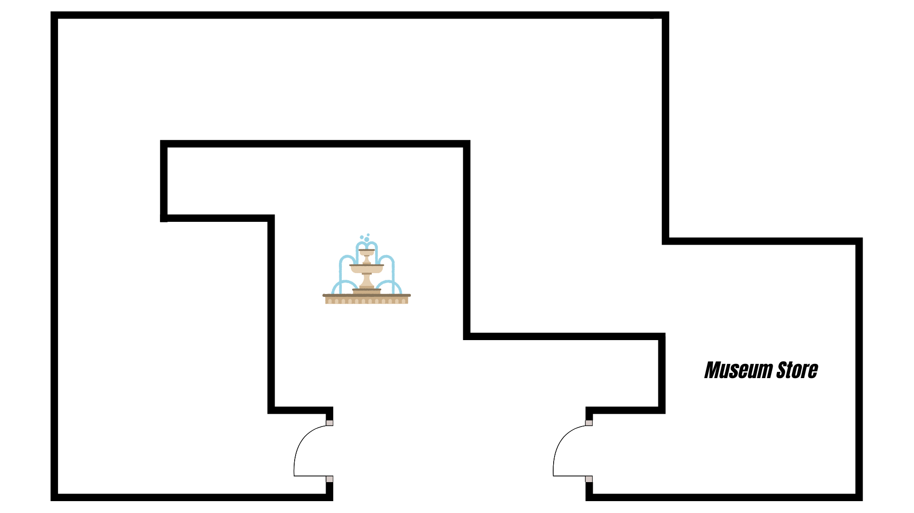

Interactive Museum Map

Interactive Point
The museum map is designed as an interactive navigation tool that allows visitors to explore the exhibition in a spatial and intuitive way. You can click on highlighted points within the map to access information about specific exhibits. Each point leads to a dedicated object information page, where additional details can be accessed via a QR code.
The exhibition is divided into three thematic sections. The first hall is dedicated exclusively to Gianni Versace and presents items directly related to his life and work. The second hall focuses on some of the most iconic red carpet looks and celebrity outfits associated with the fashion house. The third hall expands beyond fashion, showcasing objects and creations by the Versace brand that are not directly related to clothing.